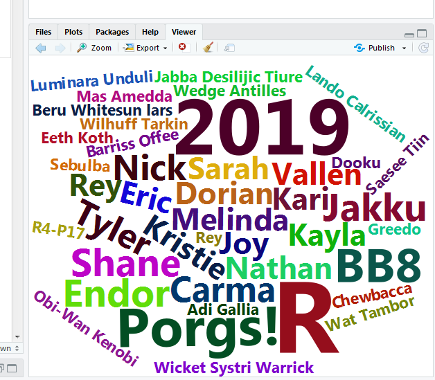

Good morning!


We are Kristie & Dorian. Feel free to call us Kristie and Dory if you’re feeling casual.
We like R.
We are not computer scientists.
We make lots of mistakes. You will see us make mistakes. Feel free to laugh at them. It’s okay. Really.
We aren’t related.
All together now
Let’s launch ourselves into the unknown and use R to make a Word Cloud. With a little copy and pasting we can make a cool image out of everyone’s name in the class. Consider this an RStudio warm-up.
We’re going to make this graphic, and you’re going to make your name really BIG .

- Open R Studio

- Copy the script below into your console in R Studio. Start with the line
install.packagesand end with the linecolor = 'random-dark').
install.packages(c("wordcloud2", "dplyr"))
library(wordcloud2)
library(dplyr)
class <- c("Kari" = 8,
"Nathan" = 8,
"Eric" = 8,
"Carma" = 9,
"Sarah" = 8,
"Phil" = 9,
"Brandy" = 9,
"Kayla" = 8,
"Shane" = 9,
"Vallen" = 8,
"Nick" = 9,
"Tyler" = 9,
"R" = 26,
"2019" = 20,
"Fond du Lac" = 16,
"Porgs!" = 14,
"Endor" = 10,
"Jakku" = 10,
"BB8" = 12,
"Rey" = 8,
"Melinda" = 8,
"Kristie" = 8,
"Joy" = 8,
"Dorian" = 8)
# Add 20 random Star Wars names as small text, size = 4
class <- c(class, rep(4, 20))
names(class)[(length(class)-19):length(class)] <- sample_n(starwars, 20)$name
# Plot the Word Cloud
wordcloud2(data.frame(word = names(class), freq = class),
size = 1,
color = 'random-dark')- In R Studio click on File > New File > R Script. You will see a code editor window open.

- Paste the copied code into the upper left hand window. This is your code editor.
- Highlight all of the code and hit
CTRL + ENTER. - You should see a Word Cloud pop up in the lower right of RStudio.
- Now try increasing the number next to your name.
- Run the code again.
- Make your name even BIGGER!
